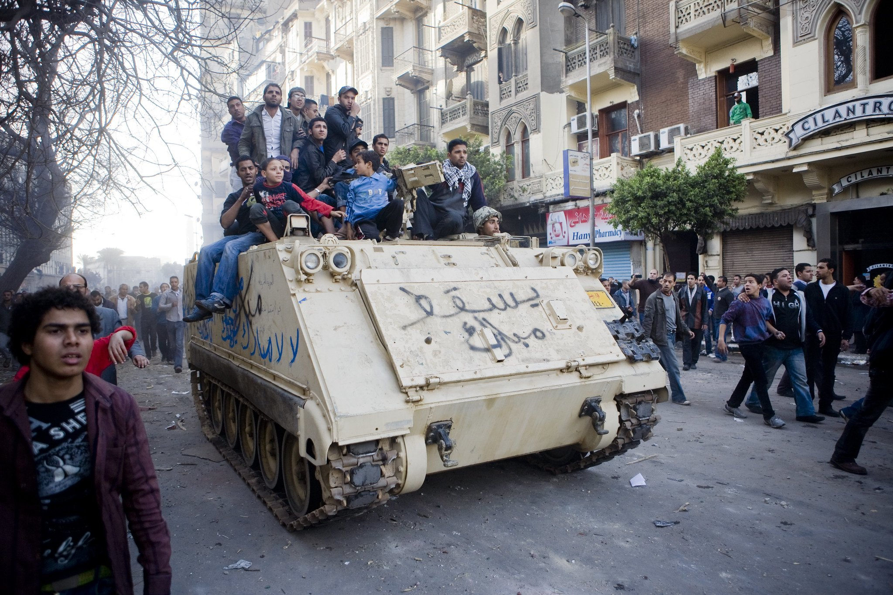

Hossam el-Hamalawy, The Battle for Lazoughli Square, from the album #Jan25 Revolution, uploaded on January 31, 2011 (taken on January 29, 2011), all rights reserved to the artist
The Dramaturgy of Affect: Towards a different Paradigm in Understanding Political Uprisings
"to shed more light on the role of creativity in using the performativity of affect as a political mode of resistance and what we understand politics to be."
Despite the flood of op-ed pieces and political analysis of the uprisings that swept the Arab-speaking world the past two years, very few paid attention to the centrality of the notion of affect and its ubiquitous peformativity in changing our understanding of what we think "the political" is. There has been an analytical bias against considering the role and importance of the affective register in understanding the role of certain Arab cities (Cairo, Tunisia, Damascus,..etc) and its inhabitants in mobilising and "performing" affective strategies of resistance, that go beyond classical notion of political mobilisation and protest.
It would then be incumbent on us, in trying to understand the many facets of those uprising and its inherent resistance to already existing modes and paradigms of interpretation, is to shed more light on the role of creativity in using the performativity of affect as a political mode of resistance and what we understand politics to be.
What is Performativity?
The first question that comes to mind, what do we mean by the performativity of affect? Or rather what do we mean by the notions of performance and affect. By performativity I don't mean the now famous concept, articulated by Judith Butler (developed from L.A. Austin and the Speech-act theorists), and defined as a set of actions and mannerisms that are scripted and tied to specific representations of gender roles, the 'performance' of which reiterates those roles (the power "vested" in speech as form of action). I use the concept of 'performativity' in reference to the many theoretical writings (Wallace Bacon, Richard Schechner, Brooks McNamara,...etc) that have been developed to analyse performance and its relation to context, setting, content and audience and its relation to other disciplines. It is this interdisciplinarity that problematizes our understanding of what performativity is and it is by questioning the limits of those percepts in understanding the uprisings that we arrive at different and new understandings of what performativity means and what it stands for.
Performance theory goes to great length to make the distinction between the different modes of social collective action: ritual, rites, theatre, entertainment,....etc. Through borrowing liberally from anthropology and comparative study of cultural phenomena it seeks to elaborate the function, meaning and constitutive elements of those 'spectacular' actions. At the heart of these theorizations is the notion that the repetition of certain gestures and choreographies of the body in space (certain movement, in a specific way and order) encodes them as meaningful symbols/symbolic acts in their respective contexts. If one takes for example the gesture of ululation, it is often repeated gesture that is seen as vocal phenomenon, in the Middle East. The repetition of which is now taken to mean a celebratory gesture, without the need to explain what it means once its performed. It has become an encoded symbolic act, that is directly tied to a specific context of performativity. It is the context of performativity, once established, that becomes the "boundary" in which this gesture can be performed. Outside of which, the gesture acquires a completely different meaning, that can be actually subversive or transgressive, compared to its original intent. The creation of such boundaries that define one collective action versus the other is the key to understanding how shifts in context, generate shift in meaning. For example, if we continue with ululation, we will find that at weddings, it is considered an expression of joy and celebration. It is then accepted as a congratulatory gesture in that context. However, if one ululates in another context, i.e. a normal conversation, the gesture can be seen as 'scandalous' or even insulting. It is the displacement of symbolic acts and the introduction of new ones, that characterizes the uprisings raising questions about instant creation and accelerated learning.
By that, I mean an accelerated process of learning how to think performatively and that manifests itself, not only in reviving an already existing rich lexicon of symbolic actions and signs but using them in different and subversive ways to create new meaning. Or even introducing 'novel' 'acts' and 'gestures' that are quickly assimilated into the already existing reservoir of performativity.
The Meaning of 'Affect'
Before we delve in more analysis the performativity of resistance, let us examine what do we mean by 'affect' in this context. Affect might be easier to understand but not to define. Specifically in the context of the Arab-speaking world, affect as emotion is understood to be a primary feature of societies inhabiting this part of the world. And it is in the 'psychological' paradigm that the notions of affect, is rendered "pathological", as in describing Arab people as 'overzealous', 'prone to rage',...etc characterizing them as 'emotional', or moved by 'emotions', in narrowing the understanding of affect as mere "emotional reaction". This becomes a weakness of character, and an inability to "rationalize" and form "objective judgement" unclouded by "emotion". This wholesale understanding of affect, as an emotional response that obfuscates rational thinking and hence renders us incapable of distinguishing between action, motive, effect is the general description that many analysts use to try to understand societies in the Arab world. But even within the Western understanding of affect there are different and alternative propositions towards understanding it and for the sake of this essay I will pick the definition developed by Deleuze and Guttari as borrowed from Spinoza.
They articulate a notion of affect that has to do with a set of structures that prefigure the kind of encounter one has with other "bodies" in terms of creating an interaction/relational paradigm for affect that goes beyond the mechanistic or the cognitive. The inter-subjective understanding of affect is a process through which a body 'acts' through its relationship with another body, by expanding or inhibiting this body's capacity for action. This becomes central in understanding the way a lot of the protests came to be. For then we understand 'affect', as the capacity of being 'affected' by others (whether ideas or people) and the capacity to 're-act', in an expansive or constrained fashion. To illustrate, in a simple or simplistic example, the politics of authoritarianism generate the affect of 'fear', to which many citizens of Arab regimes 're-acted' by the affect of 'apathy', which is a constrain on the potentiality of Arab bodies, making 'fear' a 'negative' affect. Affect here stands for action, re-action, capacity and potentiality.
The 'dramaturgy of the affect' here stands for the way in which those states of being, that interact and encounter one another arrange and re-arrange their bodies, their surroundings and their immediate environment, in a way that takes into account the 'symbolic residue' of those actions. This dramaturgy shows an incredibly heightened sense of the weight and meaning of those 'acts'/'actions', performatively and affectively, overriding the mere 'political' significance of it. In a sense, viewing it solely from the political perspective renders a rather flat and impoverished understanding of a dense and rich phenomenon that holds a thick, condensed field of information and significations.
A Historical Overview
Perhaps it would be pertinent then to have a quick overview of what kind of political context created what kind of affect in the region.
The Arab regimes that have undergone political transformation in the past two years share some similarities that tempts analysts to make generalizations about them. They are post-colonial states, that have faced one form of colonialisation or the other. They all opted for a statist-developmentalist mode of modernization, where the state played a central role in driving the forces of modernization and change. They all underwent an ideological re-alignment with the rise of neoliberal economic order and the structural readjustment programs of the World Bank and the IMF, that did not necessarily translate into a more democratic rule of government or more equitable modes of power-sharing but rather nominal change in state discourse.
In the case of Egypt, the state has systematically destroyed the mechanisms by which a political class can be socialized into the habits and practice of 'politics'. I define politics here, as the set of relationships that arrange and define the different positions of those who rule and those who are ruled in a way that articulates the interests of both. The creation of political class hinges on allowing certain mechanisms of socialization to exist, whether through school, university, unions, church/mosque, namely organizations and institutions of socialization. And the state has managed to render most of these institutions or social spaces, practically ineffectual or worse incompetent in the most basic of ways.
Thus, the failure of creating a political class, one that is able to articulate its interests and develop strategies to fulfil those interests in relation to those in power, has been read by some analysts as 'institutional failure' of the Arab regimes.
Such political impoverishment of analytical views, contributed to the difficulty in understanding the ways in which political protest was organized and the ways in which it evolved over the course of two years. While some have read it as the natural accumulation of leftist protests and the moribund labour movement, such reading is highly problematic considering how little grass-root effect the leftist movement had over the past ten years among bigger segments of the population.
It is because of its resistance to conventional political strategizing, and how it operated in the 'affective register' that a lot of the protests defy facile political analysis. And how it is still problematic in the continued absence of classical political categories of analysis that past, present and future political actions can be understood.
Selected Performative Acts as Practical Examples
To bring those concepts towards a working analysis, I have selected a few performative acts that were witnessed during the first year of the revolution, as practical examples.
1. The Museum of State Security
One of the most conspicuous symbols of rise of the police state in Egypt during the last decade of Mubarak's reign, is the large, green trucks of State Security. Towards the end of Mubarak's reign that could be seen almost everywhere: outside universities, next to the presidential palace, in Tahrir square, next to the Press Syndicate, and any potential "site of conflict". Anywhere and everywhere was under the surveillance of the ever-watchful eye of the police. After the first week of clashes with the police, several of those large green trucks were set on fire. And in the intermittent period, before the police assesses its damages and collects its debris, one truck was moved towards the Egyptian Museum and the words 'Museum of State Security' was sprayed across. Visitors to the site, actually went and took pictures standing next to the truck and even inspected its content.
The actual authorship of this performative gesture is unknown. And no one stepped forward and claimed authorship. It remains a random act of creative resistance.
What this performative gesture reveals is an astonishing understanding of the politics of ownership of history. An extraordinary dramaturgy reveals itself in this "simple" rearrangement of objects and the insertion of a particular text. Here it becomes clear, the idea of accelerated learning through affective performance.
The Egyptian Museum has long served as an edifice of the height of colonialisation and its infatuation with Egypt. It was not a national project where a team of Egyptian historians and archaeologists have worked to gather and preserve national heritage, it was the work of expatriate careerists who excluded the very people whose heritage they were busy cataloguing and studying. The museum serves and served as a continuous symbol of outsider exoticization and national inaccessibility to one's history and heritage. It has become an encoded symbol of monopoly and exclusion. That generated the 'affect' of estrangement and alienation. The Police State continued the practice of exclusion, but not only that it introduced the practice of terrorizing citizens who claimed ownership of their history. Everything was policed, the museums, the national archives, the Opera House,...etc. The Police State introduced the affect of 'terror'. But what happens when 'citizens' are actually the creators of their own history? What happens when the driving force of a protest was to fight terror and reintroduce an inclusive polity? The Museum of State Security is not just a futuristic performative action, it reveals the many layers of historical 'actions' and what kind of 're-action' encountering them created.
2. The Sculpture of Courgettes
With the many acquittals for the crony businessmen of the the Mubarak regime, who managed to get away with murder, literally, there was a deep sense of anger at how corrupt the judiciary has become. Many Egyptians still believed that the judiciary was the last standing institution that would not be swayed in a particular ideological direction, whether with or against the regime. However, the 'spectacular' -as in 'spectacle'- series of acquittals soon shattered any perception that the judiciary is fair or neutral.
At one protest where people were calling for actual trials for wrongdoers and not just farces, a man held a wooden frame, that had the word 'courgette', hung on, made out of real courgettes. The word 'courgette', in Egyptian Arabic is a metaphor for nepotism and clientelistic relationships with those in power. Some trace its history to the fact that as a vegetable courgettes did not survive the heat very well, so those who sold courgettes had a privileged access to more strategic places in the market, and all they had to do, is shout out the word, 'courgettes', so others make way.
The dramaturgy of this particular 'action' is multi-fold. First, its a sculptural piece, that takes into account the historical symbolism of the metaphor, displacing a linguistic metaphor, from the a semantic register to the physical register, rendering it into a visual percept. Again highlighting the performative potential of such a symbolic encoding. The play on materiality is what makes this a dramatic gesture, in the sense of rendering directly 'visible'. The action synchronizes the urgency of his claim (swift and just trials for those convicted and the end of nepotism and clientelistic relationships) with the transience of the courgettes as a living sculpture (the courgettes will wilt the same way, justice does).
The shift and play in materiality, the acute sense of the temporality of this material, and linking this to their protest, serves to show how well do the protesters understand their position vis-a-vis the system, and the efficacy and substantiality of their protests.
3. The Lady of the Shackles
There is a long tradition, in graphic and visual arts, of depicting Egypt as a woman dressed in the traditional peasant dress, that is usually coloured green, or the colours of the Egyptian flag. One need not go too far to see that in the statue of Mahmoud Mokhtar, Egypt's Renaissance in front of Cairo University. In the few days before Mubarak stepped down, in one of the protests in Tahrir, an anonymous lady, who was not a performer, or an actress or an artist (affirmed being neither when asked), wore a similar dress, coloured after the flag, face painted white, and had both her hands and her feet in shackles. She walked around Tahrir Square very slowly, silently, holding her shackled hands up with a pleading, mournful gaze. For those with a background in performing arts, it looked like a Japanese Butoh performance, the dance of darkness. It was a gesture filled with pathos, and emanated a theatricality necessary for its context, otherwise if it were a more subtle gesture, it might not have been noticed at all.
The dramaturgy of this performative action relies on the symbolic codification of Egypt as a woman, it traces a particular visual representation that deals directly with the concept of 'representing a nation', not only that, but by 'embodying' such representation. The apparent 'romanticism' of such notion does not undermine the urgency and meaningfulness of this gesture. The ability to abstract oneself, i.e. one is a citizen, and one's immediate surrounding, i.e. one belongs to a nation, requires a certain habits of the mind and a certain training for such an epistemological performance. Most Egyptians were denied the means by which they can self-abstract. Whether by developing those political habits that allow such process, or receiving the training, the pedagogical training to do so. Self-abstraction thus had to come through visual thinking, or in that specific case, performative thinking. Regardless of how 'romanticised' or 'pathetic' it is.
Personifying Egypt as a body that is shackled and under duress, is a crucial preliminary step to arrive at this sense of abstraction that is more developed in a truly emancipated form of citizenship. To use elements of a staged performance, to arrive at such an 'affective realization' only serves to show the profound understanding of the existing social, political, and cultural conditions that Egyptians have been going through for the past fifty years or so.
4. Death of a Puppet
Perhaps the most common peformative gesture that has been witnessed again and again in every major congregation in Tahrir and elsewhere, was the staging of the execution of a puppet, that usually has the face or the image of Mubarak or one of his entourage or even recently, the current president. Thanks to legendary performances by master puppeteers, musicians and librettists, puppetry as a theatrical form is quite an established performative practice. That is not class or gender specific. So using the staging and set-up of puppets is not only relevant but also specific to the performative culture of Egyptians.
The dramaturgical transformation of reality at work in this action or staging is akin more to Sartre's elucidation of 'emotions', as manifestations of being that instigate 'magical transformation' of a certain condition that one is confronted with. In that case, the oppressive tyranny of a regime is confronted with the staged 'death' of the 'head' of that regime. This is not strictly read as subscribing to 'magical thinking', the confusion of the nature of substances and their states, but rather an intense 'affective' response. The capacity to be 'affected' by decades of oppression and injustice resulted in many affective responses, 'fear', 'apathy', 'terror', but also 'rage', 'anger', 'hate',.....etc. The symbolic extreme of such performative action anticipates the intensity of this continuous encounter between an oppressed people and a tyrannical regime.
Nothing spells out a call of justice, than a staged execution of a tyranny.
Beyond the Stage
At the heart of of what defines 'performance' is the notion of a set space, an audience and a self-conscious 'action'. In each of the examples listed in this essay the "performers" showed an extraordinary understanding of what it means to 'stage' and what it means to 'interact' with 'an audience', while proposing a certain 'action' without necessarily being aware of such notions as performativity, dramaturgy or performance theory.
In the absence of a "political machine" that produces a certain consciousness and habits of dealing with power and its many manifestations, entire nations resorted to 'affective intelligence' to 'act', 're-act' and 'anticipate' their past, present and future. The resulting dramaturgy of this 'affective' performance should not be relegated to the realms of just 'theatre' and 'drama' or the incompetent purview of 'political science'. Those 'acts' challenge our understanding of the nature of those protests and the degree of agency and intelligence accorded to them. As such they should open new vistas in understanding collective social action, their motivation, raison d'etre, the knowledge they reveal and what they are potentially capable of doing.